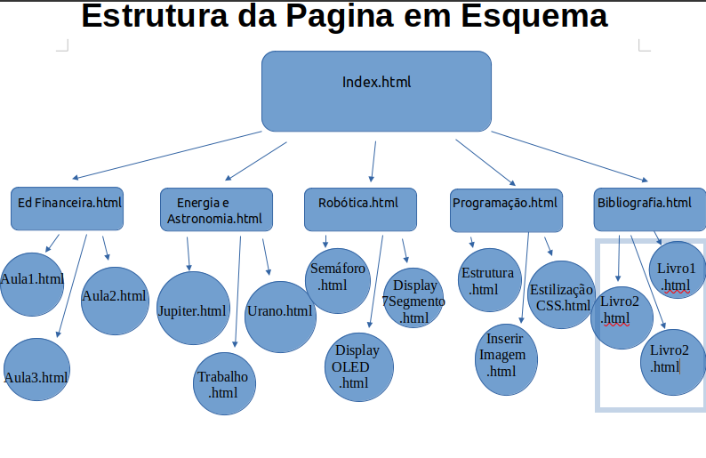

Segunda Página
Segunda Página
Criar 5 arquivos com os nomes da segundas páginas de cada um, primeiro
comando é html escolhe o html:5 e muda para lang="pt-br" adiciona o title e
detro do body coloca PÁGINA EM CONSTRUÇÃO.
<!DOCTYPE html>
<html lang="pt-br">
<head>
<meta charset="UTF-8">
<meta name="viewport" content="width=device-width, initial-scale=1.0">
<title>Programação</title>
<link rel="stylesheet" href="estilo.css">
</head>
<body>
PÁGINA EM CONSTRUÇÃO
</body>

Para se fazer a segunda página primeiramente no index.html precisa-se
colocar os links que levarão as segunda página exemplo:
<a href="Ed Financeira.html">Educação Financeira</a>
<a href="Energia e Astronomia.html">Energia e Astronomia</a>
<a href="Robótica.html">Robótica</a>
<a href="Programação.html">Programação</a>
<a href="Bibliografia.html">Bibliografia</a>
Exemplo referente o esquema acima.